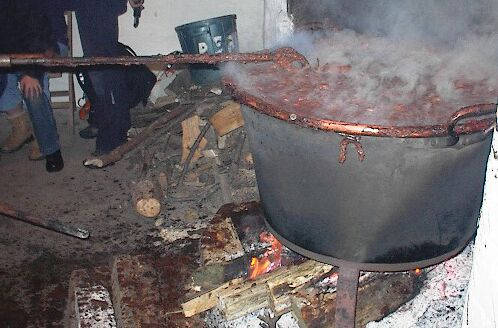

Tch'est qu'ch'est, lé nièr beurre? Ch'n'est pon du beurre, et i' n'est pon nièr nitout! Ch'est eune sorte d'g'lée breunâtre qu'nou fait en Jèrri. Ch'est eune tradition vénéthabl'ye d'faithe lé nièr beurre en s'tembre quand nou-s-a du cidre et des pommes, et quand les Jèrriais s'rencontrent pouor faithe lé travas d'la faith'sie du nièr beurre, pouor chanter des vielles chansons et èrciter des poèmes et d's histouaithes.
Coumment faithe lé niér beurre?
 |
 |
 |
 |
I'faut:

Pouor faithe lé nièr beurre: pouor c'menchi i'faut p'ler les pommes. Nou n'veurt pon la p'liche. D'habitude, ch'est fait par eune dgaîngue dé femmes, tandi qu'les hoummes prépathent lé feu et mettent lé cidre à bouoilli.
Après chenna, i' c'menchent à ajouôter les pommes dé temps en temps, èrmuant tout l'temps. Chennechîn continnue pouor vîngt-quat' heuthes (véthe-dgia! vîngt-quat' heuthes!) et il' ajouôtent acouo des pommes à m'suthe.
En travaillant, les gens pâlent et chantent, et les femmes (ou p't'êt' bein d'nos jours, des hoummes étout!) prépathent dé tchi mangi et baithe pouor les cheins tchi èrmuent lé nièr beurre auve lé rabot. Il est hardi înmportant d'èrmuer sans l'tchitter, pa'ce qué, si nou laîsse lé nièr beurre à bouoilli sans èrmuer, lé g'lée s'en va brûler et lé nièr beurre s'sa gâté. Y'a tchiques années, sus eune fèrme lé rabot s'rompit et i' fallait couôrre siez les vaîsîns chèrchi un aut' rabot, mais malheutheusement lé nièr beurre restit trop sans èrmuer et lé nièr beurre n'tait bon pouor rein!
Deux'trais heuthes d'vant qu'ch'sait prêt, du ricolisse est ajouôté et pis lé jus des limons. Quand i' pensent qu'ch'est prêt, la peîle est hallé d'sus lé trépid par quat' forts hoummes auve des pouques mouoillies et i' l'mettent sus l'fond dé l'ais.
L's êpices sont ajouôtées et ch'est r'mué pouor acouo deux'trais mînnutes.
Lé nièr beurre est mîns dans des grands pots, ou des boutchets ou tchique chose, et emm'né ès femmes tchi l'mettent dans des p'tits pots à g'lée atout des tchulyièrs en bouais (car lé nièr beurre est acouo bein caûd). Les pots sont couèrts atout des ronds d'papyi.
Ach'teu il est prêt à vendre. Nou peut trouver des pots d'nièr beurre dans tchiques boutiques, mais à m'n avis, lé miyeu ch'est d'aidgi auve la faith'sie du nièr beurre et d'êt' "payi" auve tchiques pots. Ou bein nou peut en acater ès fêtes d'pâraîsse ou ou des fêtes dé clobe quand les gens vendent du nièr beurre pouor gangni des sous pouor l's activités d'lus clobe.
S'ous n'avez pon gouôté lé nièr beurre, i' faut l'mangi sus du pain d'caboche, mais i' n'y'a rein d'miyeu sus vot' toast lé matîn!
Bouan appétit!
Viyiz étout:
{kind=link}
{kind=link}
{kind=link}